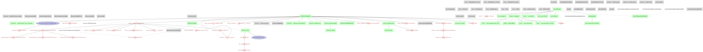

Architecture & Tables#
Quick Intro & Resources to DataJoint#
DataJoint is an open-source data management framework designed for scientific workflows, especially in neuroscience and experimental biology. It provides a relational data model and tools for building, querying, and maintaining complex data pipelines. DataJoint enables modular, reproducible, scalable, and collaborative data analysis by organizing data into well-defined tables and automating dependencies between processing steps.
DataJoint Table Types
DataJoint organizes data into several table types, each serving a specific role in a scientific data pipeline:
Manual Tables (
dj.Manual): Populated by users or external systems. Used for raw data, experiment metadata, or any information entered manually.Imported Tables (
dj.Imported): Populated by automated scripts that import data from external sources or files. Used for data acquired from instruments or external analysis.Computed Tables (
dj.Computed): Populated by automated computations based on upstream tables. Used for analysis, processing, and derived results.Lookup Tables (
dj.Lookup): Contain reference information, such as lists of hardware, experimental conditions, or other constants.
Useful Links:
Related VR4Mice docs:
docs/software/data_import_export.md
Repository Structure and Roles#
Key components#
Graphical User Interface (GUI) for metadata and data transfer.
VR4mice DataJoint pipeline including table definitions, as well as external schemas for experiments and mice.
Data fetching and population.
System/Docker: Uses Docker Compose for deployment. Ensure Docker Compose is available (
docker composeordocker-compose) and your user is in the Docker group.
Codebase overview#
The
base/base_min_schemas/directory contains minimalexpandmiceschema definitions needed for GUI dropdowns and basic metadata.The
Dockerfile(installs pinned deps fromrequirements-docker.txt) anddocker/entrypoint.shbuild the client image used bydocker-compose.yml.The
gui_transfer/folder contains all GUI-related information. Only this folder, plus Python 3 and PyQt5, are needed to build the GUI on a rig computer. For dropdown menu paths and rigconfig.jsonsetup, see GUI dropdown menu and rig setup.The
run.pyscript is the main CLI entrypoint for running pipeline modes (populate, analysis, dlc, etc.).The
cron_scenario.pyscript runs the full pipeline with per-step logging (used by cron). See Cron and Docker operations for wrapper scripts, crontab setup, and compose project naming.The
quick_start.shscript interactively configures.env/env.pyand starts containers.The
vr4mice/folder contains the core of the pipeline. Key components:schema/(DataJoint table definitions),analysis/(helpers and plotting),actions/(ingest, sync, fetch),utils/(logging, schema config, connections). Seedj_pipeline/vr4mice/README.md.The
Makefileprovides shortcuts for Docker and common commands.The
docker-compose.ymlfile defines the database and client services and volume mounts.

Tables in the vr4mice/schema Pipeline#
Each file under dj_pipeline/vr4mice/schema/ has a module-level docstring, and each top-level DataJoint table class has a class-level docstring describing its role (nested dj.Part tables may not). The summaries below mirror those docstrings.

base.py#
Base schema linking datasets to shared experiment metadata.
class Base(dj.Computed)
Depends on: vr4mice.Dataset
Links together Dataset with base Mouse and Exp schemas.
vr4mice.py#
Core VR4Mice schema tables for datasets, metadata, and raw signals.
class Camera(dj.Lookup)
Camera definition table; to be updated if a new camera name is added.
class Dataset(dj.Manual)
Stores dataset names representing VR experiments; keeps raw pickle and npy files (mouse_name_doe_attempt format).
class FailedSession(dj.Manual)
Tracks dataset/table pairs that failed during populate/compute. Primary key is
(dataset, failed_table_name); populate skips a dataset only for the table that failed.
class Labels(dj.Lookup)
Stores custom group labels assigned to datasets.
class Groups(dj.Manual)
Links datasets to custom Labels entries.
class Labs(dj.Lookup)
Stores collaborating lab identifiers.
class Collab(dj.Computed)
Links each dataset to a collaborating lab.
class Video(dj.Manual)
Stores raw video file metadata, timestamp files, and paths on the rig PC.
class ModelName(dj.Lookup)
Stores DLC model names applied to video analysis; can be extended for new model types.
class DLC(dj.Manual)
Stores local paths to keypoints and processed keypoints files.
class MouseState(dj.Manual)
Stores mouse game-related position and events; fetched from the teensy output pickle file.
class State(dj.Manual)
Depends on: vr4mice.MouseState
Stores trial-related information; fetched from the teensy output pickle file.
class Metadata(dj.Manual)
Stores Unity parameters and session metadata; fetched from the teensy output pickle file.
class SignalsPhotodiode(dj.Computed)
Stores photodiode and generated sync signals from the PROC file.
class GuiParams(dj.Manual)
Stores Unity game parameters fetched from the teensy output pickle file.
class TrainingPhaseType(dj.Lookup)
Stores training phase categories used to classify datasets.
class DatasetType(dj.Computed)
Depends on: vr4mice.Metadata
Assigns each dataset to a training phase based on metadata and state.
class Box(dj.Manual)
Depends on: vr4mice.Metadata
Stores box positions; fetched from the teensy output pickle file.
class Object(dj.Lookup)
Stores target and distractor object names used in the game.
base_analysis.py#
Analysis schema tables built on top of core VR4Mice datasets.
class DataFrame(dj.Computed)
Depends on: vr4mice.Dataset
Hosts the main per-step analysis dataframe (trial data, position, velocity, choices, rewards, and behavioral metrics). Populated via create_data_frame(key).
class BoxDataFrame(dj.Computed)
Depends on: DataFrame
Stores per-trial report and target box coordinates derived from DataFrame.
class SummaryPlots(dj.Computed)
Depends on: vr4mice.Dataset
Stores paths to generated per-session summary plot figures. Cron populates only sessions
that have both DataFrame and BoxDataFrame.
class GitCommit(dj.Computed)
Depends on: DataFrame
Stores git commit hash and changed files for analysis reproducibility.
summary_emails.py#
Tracks summary plot notification emails sent per session.
class SummaryPlotEmail(dj.Manual)
Depends on: base_analysis.SummaryPlots
Records send time, recipients, email type, and optional error message. Cron retries
sessions with no successful send (and session date on/after VR4MICE_EMAIL_SINCE).
dlc.py#
DLC-related schema tables for keypoints and derived kinematics.
class DLCProcessor(dj.Imported)
Depends on: vr4mice.DLC
Imports processed DLC outputs from the PROC npy file.
class DLCKptsDf(dj.Computed)
Depends on: vr4mice.DLC
All available raw DLC keypoints with likelihood.
class SyncDLCKptsDf(dj.Computed)
Depends on: DLCKptsDf
Filtered and game-synchronized DLC keypoints.
class OfflineKinematics(dj.Computed)
Depends on: SyncDLCKptsDf
Stores mouse body kinematics computed offline from synchronized DLC keypoints.
interpolated_trajectories.py#
Interpolated trajectory schema used for downstream analysis tables.
class InterpolatedTrials(dj.Computed)
Depends on: base_analysis.DataFrame
Stores J-shaped interpolated per-trial trajectories and kinematics.
class MeanXYTrajectory(dj.Computed)
Depends on: InterpolatedTrials
Stores mean x/y trajectories across trials for each aperture.
class YBinnedXYTrajectory(dj.Computed)
Depends on: InterpolatedTrials
Stores y-binned mean trajectories for each aperture.
class MeanVelocities(dj.Computed)
Depends on: InterpolatedTrials
Stores mean velocities across trials for each aperture and trial length.
latency_tests.py#
Latency testing schema for photodiode and frame timing analysis.
class SignalsPhotodiodeAligned(dj.Computed)
Depends on: vr4mice.SignalsPhotodiode
Stores interpolated and aligned photodiode and generated sync signals.
class AllLatencies(dj.Computed)
Depends on: SignalsPhotodiodeAligned
Stores per-session latency between generated and photodiode signal edges.
session_metrics.py#
Session-level and trial-level summary metrics schema.
class SessionMetrics(dj.Computed)
Depends on: vr4mice.Dataset (populated from base_analysis.DataFrame)
Stores session-level summary metrics computed from base_analysis.DataFrame.
class TrialMetrics(dj.Computed)
Depends on: base_analysis.DataFrame
Stores per-trial summary metrics derived from the DataFrame table.
decision.py#
Decision analysis schema for regression models and decision points.
class SessionLabel(dj.Lookup)
Maps session labels to experiment set and stage.
class ExperimentSet(dj.Lookup)
Stores experiment set names and descriptions.
class ExperimentStage(dj.Lookup)
Stores experiment stage names and descriptions.
class ExperimentMember(dj.Imported)
Depends on: vr4mice.Dataset
Links each dataset to an experiment set, stage, and session label.
class InclusionStatus(dj.Computed)
Depends on: ExperimentMember
Inclusion status per dataset and experiment set role.
class Label(dj.Lookup)
Stores regression feature names used in decision analysis.
class LabelSet(dj.Lookup)
Stores named sets of regression labels for model training.
class ModelParams(dj.Lookup)
Stores logistic regression hyperparameter combinations.
class PredictionModel(dj.Computed)
Depends on: LabelSet, ModelParams, ExperimentSet, ExperimentStage
Trains logistic regression model per mouse using LOGO cross-validation.
class PredictionModel10Windows(dj.Computed)
Depends on: LabelSet, ModelParams, ExperimentSet, ExperimentStage
Trains LOGO regression models on 10 equally-spaced trial progress windows.
class DecisionThreshold(dj.Lookup)
Lookup table for different uncertainty thresholds to define decision points.
class DecisionPoints(dj.Computed)
Depends on: PredictionModel.SessionPrediction, DecisionThreshold
Decision point and corresponding per-trial data.
class DecisionPoints10Windows(dj.Computed)
Depends on: PredictionModel10Windows.SessionPrediction, DecisionThreshold
Decision points computed from 10-window model predictions.
inputs_videos.py#
Video input schema for sync/crop/align operations on session recordings.
class RawVideo(dj.Imported)
Depends on: vr4mice.Dataset
Stores the raw OBS recording path for a dataset.
class ProcessedVideo(dj.Computed)
Depends on: RawVideo
Stores cropped/truncated OBS videos and ROI metadata.
class VideoSyncSignal(dj.Computed)
Depends on: ProcessedVideo
Extracts the binary sync trace from the sync ROI video.
class AlignedVideoFrame(dj.Computed)
Depends on: VideoSyncSignal, vr4mice.State
Aligns game steps to video frames using photodiode when available; stores QA metrics.